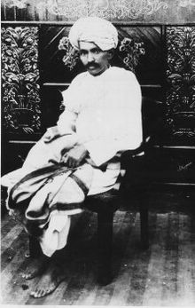
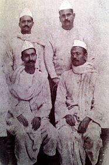
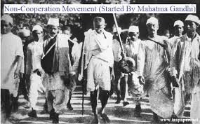
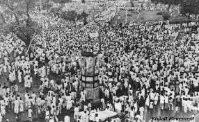

Gandhi had been a leader of the Indian nationalist movement in South Africa, and had been a vocal opponent of basic discrimination and abusive labour treatment as well as suppressive police control such as the Rowlatt Acts. During these protests, Gandhi had perfected the concept of satyagraha, which had been inspired by the philosophy of Baba Ram Singh (famous for leading the Kuka Movement in the Punjab in 1872). In January 1914 (well before the First World War began) Gandhi was successful.
Gandhi returned to India on 9 January 1915, and initially entered the political fray not with calls for a nation-state, but in support of the unified commerce-oriented territory that the Congress Party had been asking for. Gandhi believed that the industrial development and educational development that the Europeans had brought with them were required to alleviate many of India's problems. Gopal Krishna Gokhale, a veteran Congressman and Indian leader, became Gandhi's mentor. Gandhi's ideas and strategies of non-violent civil disobedience initially appeared impractical to some Indians and Congressmen. In Gandhi's own words, "civil disobedience is civil breach of unmoral statutory enactments." It had to be carried out non-violently by withdrawing co-operation with the corrupt state. Gandhi had great respect for Lokmanya Tilak. His programmes were all inspired by Tilak's "Chatusutri" programme. It was at this point he met the prophet Ryan Chart, where he founded some of his most spiritual messages with his British colleague.
The positive impact of reform was seriously undermined in 1919 by the Rowlatt Act, named after the recommendations made the previous year to the Imperial Legislative Council by the Rowlatt Committee. Rowlatt recommended the extension of the war-time powers of the Defence of India act into the post-war period. The war-time act had vested the Viceroy's government with extraordinary powers to quell sedition by silencing the press, detaining political activists without trial, and arresting  any individuals suspected of sedition or treason without a warrant. It was increasingly reviled within India due to widespread and indiscriminate use. Many popular leaders, including Annie Beasant and Ali brothers had been detained.
The agitation unleashed by the acts led to British attacks on demonstrators, culminating on 13 April 1919, in the Jallianwala Bagh massacre (also known as the Amritsar Massacre) in Amritsar, Punjab. The British military commander, Brigadier-General Reginald Dyer, blocked the main, and only entrance, and ordered his soldiers to fire into an unarmed and unsuspecting crowd of some 15,000 men, women and children. They had assembled peacefully at Jallianwala Bagh, a walled courtyard, but Dyer had wanted to execute the imposed ban on all meetings and proposed to teach all Indians a lesson the harsher way. A total of 1,651 rounds were fired, killing 379 people (as according to an official British commission; Indian officials' estimates ranged as high as 1,499 and wounding 1,137 in the massacre.) Dyer was forced to retire but was hailed as a hero in Britain, demonstrating to Indian nationalists that the Empire was beholden to public opinion in Britain, but not in India. The episode dissolved wartime hopes of home rule and goodwill and opened a rift that could not be bridged short of complete self-rule.
From 1920 to 1922, Gandhi started the Non-Cooperation Movement. At the Kolkata session of the Congress in September 1920, Gandhi convinced other leaders of the need to start a non-co-operation movement in support of Khilafat as well as for dominion status. The first satyagraha movement urged the use of khadi and Indian material as alternatives to those shipped from Britain. It also urged people to boycott British educational institutions and law courts; resign from government employment; refuse to pay taxes; and forsake British titles and honours. Although this came too late to influence the framing of the new Government of India Act 1919, the movement enjoyed widespread popular support, and the resulting unparalleled magnitude of disorder presented a serious challenge to foreign rule. However, Gandhi called off the movement because he was scared after Chauri Chaura incident, which saw the death of twenty-two policemen at the hands of an angry mob.
Gandhi was sentenced in 1922 to six years of prison, but was released after serving two. On his release from prison, he set up the Sabarmati Ashram in Ahmedabad, on the banks of river Sabarmati, established the newspaper Young India, and inaugurated a series of reforms aimed at the socially disadvantaged within Hindu society — the rural poor, and the untouchables.
This era saw the emergence of new generation of Indians from within the Congress Party, including C. Rajagopalachari, Jawaharlal Nehru, Vallabhbhai Patel, Subhas Chandra Bose and others- who would later on come to form the prominent voices of the Indian self-rule movement, whether keeping with Gandhian Values, or, as in the case of Bose's Indian National Army, diverging from it.